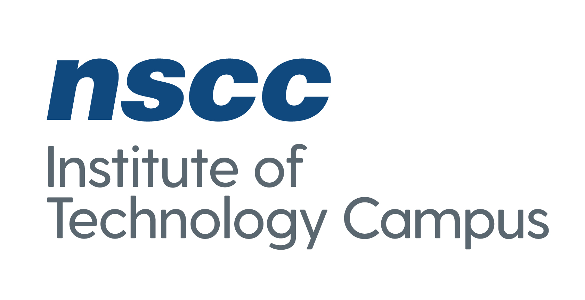

Hi there!
I am a student attending IT Web Development at NSCC. This page is my final project for Website Development class. It`s a summary of all techniques that I have learned during the semester.
Enjoy it!
Powered by:


